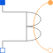
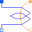

QuasiStaticAnalogElectroMagneticConverterElectro magnetic converter to only (!) quasi static analog, neglecting induced voltage |

|
Information
This information is part of the Modelica Standard Library maintained by the Modelica Association.
The analog single phase winding has an effective number of turns,  and a respective orientation of the winding,
and a respective orientation of the winding,  . The current in the winding is
. The current in the winding is  .
.
The total complex magnetic potential difference of the single phase winding is determined by:

where
 is the reference angle of the electrical and magnetic system, respectively. The induced voltage
is the reference angle of the electrical and magnetic system, respectively. The induced voltage  is identical to zero.
is identical to zero.
See also
Modelica.Magnetic.FundamentalWave.Components.SinglePhaseElectroMagneticConverter, Modelica.Magnetic.FundamentalWave.Components.MultiPhaseElectroMagneticConverter, MultiPhaseElectroMagneticConverter
Parameters (1)
| effectiveTurns |
Value: Type: Real Description: Effective number of turns |
|---|
Connectors (4)
| pin_p |
Type: PositivePin Description: Positive pin |
|
|---|---|---|
| pin_n |
Type: NegativePin Description: Negative pin |
|
| port_p |
Type: PositiveMagneticPort Description: Positive complex magnetic port |
|
| port_n |
Type: NegativeMagneticPort Description: Negative complex magnetic port |
Components (2)
| V_m |
Type: ComplexMagneticPotentialDifference Description: Complex magnetic potential difference |
|
|---|---|---|
| Phi |
Type: ComplexMagneticFlux Description: Complex magnetic flux |
Used in Components (1)
|  |
Modelica.Magnetic.QuasiStatic.FundamentalWave.BasicMachines.Components
Quasi static single phase winding neglecting induced voltage |